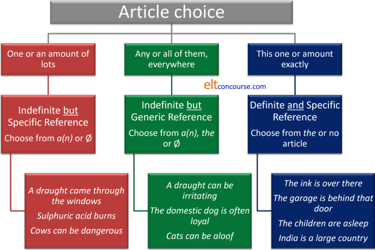

The article system

Articles in English form a sub-class of determiners. If you want the overview first, therefore, you should look at the guide to determiners (new tab).
Articles are unusual determiners in that they cannot stand alone
in English and function as pronouns. Other determiners
generally perform both functions as in, e.g.:
I didn't lose any money
I didn't lose any
I want that book
I want that
I don't have many ideas
I don't have many
Give me some sugar
Give me some
etc.
but we do not allow:
*I have the
*She gave me a
etc.
Other languages, incidentally, do not necessarily have a parallel
restriction.
There are three articles in English that we consider here:
- a / an: the indefinite article
- the: the definite article
- Ø: the zero article
In what follows, we shall not be considering the negative article no or the partitive article some.
Website warning |
There is deep confusion out here on the web about how articles in
English are used. There is also a good deal of uncertainty
about what articles actually are.
On many sites you will find a set of rules which, apart from being
unnecessary and confusing, are, at times, plain wrong.
The focus often seems to be on slightly interesting phenomena such
as how articles are used with names of families, rivers and
countries and so on at the expense of setting out the generally
quite simple and transparent rules that we will cover in this guide.
Guides which focus on quirks and exceptions
which depress and confuse learners rather than shining a light on
the concepts which underlie the use of articles in English are not
very helpful.
What happens with that approach is that learners are encouraged to commit a range of pseudo-rules to memory and then asked to apply them to the language they know. They can't do that, of course, because the pseudo-rules themselves are obscure and inadequate so they make mistakes. It's a form of internet-induced error.
 |
How many possible articles are there? |
English does not use the full range of articles (and it is unlikely that any language does) but there are possibilities in all languages and some will use more or fewer of the possible articles to determine nouns.
Here they are, with a few comments:
- The indefinite article

In English this is either a or an but some will include some as a plural indefinite article.
Example are:
This is an interesting book
He came to a halt
Give me some coins
We have wasted an hour
It's a(n) historic moment
The issue for some learners is that the article an occurs slightly irregularly.
The general rule is that we use an before a vowel sound, but we use a before a consonant sound and in both cases disregard how the word is spelled because this is a pronunciation issue. So we get, e.g.:
an artist
a sculptor
a European issue
an honourable man
When the /h/ sound is weakly or not sounded, many BrE speakers will also use an instead of a so we have:
an historic moment
etc.
and some will choose to use an before hotel because the word is quite recently imported from French and the 'h' is not sounded in that language. There is a bit more below on this.
When the /h/ sound is clear, however, the choice falls on a as in, e.g.:
a horrible experience
Both a and an are very often reduced to their weak forms and pronounced as /ə/ and /ən/ respectively.
If, however, the speaker wishes to emphasise the fact that the article refers to only one instance of a specified set of items, then the article is pronounced in its full form as /eɪ/ or /æn/. In writing, this use will usually be shown as emphatic as in, e.g.:
That's a reason but not the only one
That's an idea but not the best one
In quite a lot of languages which have an indefinite article, it is indistinguishable from the numeral one (and if not the same, then closely related to it). Unsurprisingly, the article a/an is derived from the word for one in English and is a reduced form of it. - The definite article
In English this is solely the word the because English does not have alternatives dependent on gender or number so we have e.g.:
The people all arrived late
The car went off the road
The choice is limited
Again, there is a pronunciation issue.
The article is pronounced /ði/ before a vowel sound and /ðə/ before a consonant sound, again, regardless of how a word is spelled. We have, e.g.:
the apple (/ði.ˈjæp.l̩/)
the man (/ðə.mæn/)
the Euro (/ðə.ˈjʊə.rəʊ/)
etc.
And again, the weak or absent /h/ sound is slightly problematic because some will choose to pronounce
the historical facts
as /ðə.hɪ.ˈstɒ.rɪk.l̩.fækts/
and some will prefer /ði.hɪ.ˈstɒ.rɪk.l̩.fækts/. There is more below on this.
The exception to this rule is when the article is stressed as in, for example:
That is the tool for the job
as /ðət.s.ˈði.tuːl.fə.ðə.dʒɒb/
in which case it is marked to signal that it means the best, most appropriate or only tool for the job. In written language, it is normally italicised or underlined in the marked form.
In a range of languages which do not have a definite article (or any article system at all) the equivalent of the definite article is often a demonstrative determiner roughly translatable as this or that, these or those.
In fact, the definite article in English shares an etymology with the demonstrative determiners and can be seen as a reduced form of them in Modern English. In other words, this, that, these and those can be conceptualised as forms of the definite article marked for spatial relationships (near or far) and number (singular or plural). - The proper article

This is somewhat rare in English but occurs frequently in other languages leading some into error.
For example, in Greek, Portuguese and Catalan, it is conventional to use an article before people's name (the Peter, the Maria etc.). This also happens in informal use in German, French, Italian and Spanish.
The proper article occurs less often in English but examples are:
The Mr Jones I spoke to was very helpful
The Strand is a road in London
The Kremlin is in Moscow
The Gambia is in Africa
etc.
It is also possible for a/an to occur as a proper article although it is rare as in, for example:
A Mrs Jones telephoned
in which the speaker is signalling that the person is unknown except by name.
Usage varies over time and countries once conventionally referred to with the proper article are no longer referred to that way so we have, e.g., Ukraine, not The Ukraine and Argentina not The Argentine.
Modified country names conventional use the proper article:
The United States
The Soviet Union
The United Arab Emirates
etc.
In this guide, we consider proper articles in English as a subset of the definite article. - The partitive article

This only occurs in English with the determiner some as in, e.g.:
Please give me some paper
Pass me some pens
etc.
However, other languages use the partitive article frequently and these include French, Greek, Italian and a range of others and in many of those languages they consist of a combination of the definite article with a preposition. For example, in French, à + le = au and de + le = du. In Italian, the preposition di combines with the definite article to produce dello, della and other forms equivalent to some or any in English and called a partitive article. In Greek, the preposition se (at or in) combines with articles to form ston, sti and so on. - The negative article
In English, this role is taken by the word no which acts as a simple determiner. However, other languages may reserve an article-like item for this function. German, for example has the word kein which is inflected in the same way as the indefinite article to show gender and number.
Fundamentally, English does not use a negative article but for those whose languages do, comparing no to the indefinite article has some validity. - Zero article

As the name implies, this is an absence of an obvious article and is usually represented as Ø. Because English has a definite article denoting specificity as in, e.g.:
Give me the money
it also employs the zero article to denote an unspecified object before a count or mass noun as in:
Give me money
Take books with you
The word some can be used as an indefinite plural article or to determine a mass noun as in, e.g.:
Give me some money
Take some books with you
It is unhelpful to describe the lack of an article in languages which do not have an article system or those which have a reduced system as the zero article.
It is also not the case that proper nouns in English usually take the zero article. Most actually take no article at all so, for example:
Peter is here
is not an example of the use of the zero article because proper names do not normally take any article at all. However:
Rain fell overnight
does contain an example of the zero article because that is often how we signal a mass noun non-specifically and should, if we are being strict be written as:
Ø Rain fell overnight.
Compare:
The rain made the paths muddy
which is the use of the definite article to refer to a specific mass noun (i.e., the rain that both you and I know about).
 |
Pronunciation |
In common with other function words, articles are subject to weakening in connected speech in particular. This is what happens:
- Before vowel sounds:
- The indefinite article, an, is reduced
in rapid speech to /ən/ as in:
an orange pronounced as /ən.ˈɒ.rɪndʒ/. - The definite article, the, retains a longer
final sound as /ði/ (but is not as long as /ði:/) as in:
the orange pronounced as /ði.ˈjɒ.rɪndʒ/. - In both cases there is liaison so for example:
an apple
sounds more like a napple and there is an intrusive /j/ sound in
the apple
which can be transcribed as /ði.ˈjæp.l̩/, but not all speakers produce the intrusion and more careful speech usually avoids it.
(Incidentally, the word apron in English was originally a napron but, by a process called misdivision it has become an apron.)
- The indefinite article, an, is reduced
in rapid speech to /ən/ as in:
- Before /h/:
As we saw above, /h/ is often pronounced very weakly so we get, e.g.:- a vs. an (as /ə/ or /ən/)
How the pronunciation varies when the article falls before /h/ varies, as with many phenomena in connected speech, with the stress patterning.
When the first syllable of a word beginning with /h/ carries stress, the choice falls on a (not an) pronounced as /ə/ in as in
a history lesson as /ə.ˈhɪ.str̩i.ˈles.n̩/
When the first syllable is not stressed, however, the preferred form is an and the pronunciation is:
an historic moment as /ən.hɪ.ˈstɒ.rɪk.ˈməʊ.mənt/
In more careful speech, however, that might also be pronounced as /æn.hɪ.ˈstɒ.rɪk.ˈməʊ.mənt/ with the article in its full citation form.
The reason lies in stress as we have said and the unstressed first syllables of words are often reduced. There is evidence to suggest that in earlier times an unstressed syllable with /h/ onset was not pronounced at all. Dialects and varieties vary.
But when the /h/ is clearly sounded and the stress falls on the syllable it contains, we get, e.g.:
a horrible experience
a history lesson
in which the article is reduced to /ə/.
The British National Corpus of above 100 million words finds rather more incidents of a historical than an historical but not by much. It finds about equal numbers of an habitual as a habitual including dictionary entries, incidentally. - the (as /ðə/ or /ði/)
the historic moment
is pronounced either as /ðə.hɪ.ˈstɒ.rɪk.ˈməʊ.mənt/ or /ði.hɪ.ˈstɒ.rɪk.ˈməʊ.mənt/ depending how careful the speaker is. This also is caused by the stress features set out above. First-syllable stressing usually requires the use of /ðə/ and non-first syllable stressing requires /ði/ so in the case of a clear /h/ as in:
the horrible experience
the pronunciation remains as /ðə/ as in /ðə.ˈhɒ.rəb.l̩.ɪk.ˈspɪə.rɪəns/ and in the case of:
the horrific experience will usually be /ði.hə.ˈrɪ.fɪk.ɪk.ˈspɪə.rɪəns/
simply because horrific takes second-syllable stress and horrible takes first-syllable stress.
- a vs. an (as /ə/ or /ən/)
- Before other consonants such as at the beginning of
sound, bag, cake etc.:
- a is pronounced as /ə/ (/ə.ˈsaʊnd/, /ə.bæɡ/, /ə.keɪk/)
- the is pronounced as /ðə/ (/ðə.ˈsaʊnd/, /ðə.bæɡ/, /ðə.keɪk/)
 |
How do other languages work? |
Languages differ dramatically in the use of articles (and some don't use them at all). Here's a short list but you should rely on your own research into the language(s) of your learners. Asking them is often useful as it alerts them to differences.
- Languages with no article system
- These include most Slavic languages (Russian, Polish,
Bosnian, Czech etc.) as well as Chinese languages, Indonesian,
Japanese, Hindi and Urdu.
For speakers of these languages, using the correct article in English is very challenging because they do not easily conceptualise the need to mark specificity and non-specificity or count vs. mass nouns. - Language with no indefinite article
- These include most Celtic languages (Breton, Welsh, Gaelic, Irish etc.) and Turkish, Persian languages and Arabic (which often encodes the definite article as a prefix).
- Languages using affixation for articles
- Some languages do not have a separate word class of articles
but may use a similar system by adding suffixes to nouns.
These include Albanian, Macedonian, Bulgarian, Bengali, Romanian
and Scandinavian languages.
Other languages such as Hebrew and Maltese use prefixes to denote an article system akin to English.
Many languages alter articles to show gender (most European
languages) and it is impossible to use any noun, even an invented
one, without first considering its gender. European languages
have two or three genders normally although more are possible.
Some languages, such as Basque, Georgian and most Native American
languages distinguish between animate and inanimate nouns through
the use of gender inflexions on the articles (and elsewhere).
Languages which are traditionally described as being article-less such as Japanese and Cantonese often use classifiers (sometimes called counters) to denote a wide range of properties in the nouns such as animacy, flatness, stick-like appearance and so on. For more, see the guide to classifiers, partitives and group nouns, linked in the list of related guides at the end.
 |
Three critical concepts |
English has no gender marking on articles and we do not mark them
for case or number either.
However, there is a deeply important
distinction between three related concepts which determine how the
article system functions:
- definite and indefinite: particular or general
- specific and non-specific (or generic): which or what
- mass and count: much or many
The three concepts are
entirely lacking in many other languages.
In some languages, it is necessary to decide
what the shape of objects is and what other characteristics they exhibit
before you can count them or speak about even a single incidence of
them. In others, it is necessary to decide what gender to ascribe to a
noun before attaching a correct article as well as sometimes what
case the noun is in.
In English, however, these concepts are lacking and it is necessary
to decide in terms of these three ideas above before deciding which
article is appropriate.
That is a serious conceptual challenge for many learners who, even
at advanced levels, are unable to use the article system with
consistent accuracy (or even consistent inaccuracy).
You cannot successfully teach the article system in English without
making these three ideas clear.
 |
The rules |
The rules we follow arise from the three concepts we have
identified.
We will refer here in all that follows to the distinction between
indefinite but specific and definite
and specific. That's the
key to have in mind.
- Indefinite but
specific reference is to what we are
talking about but not to which we have in mind.
I know, for example, that when you say:
Pass me a pen
or
Give me water
that you are referring to something which uses ink for writing but I can pass you any pen that comes to hand because although you have been definite about what you want, you have not told me which you want.
In the second case, I also know what you want but I have no notion of the quantity or source of the water you require. - Definite
and
specific reference gives me two types of information.
So, when you say
Pass me the pen
or
Give me the water
then:- I know what you are talking about and will pass you a pen or give you water but ...
- ... I also know which instance you are talking about and will give you the specific pen or amount or container of water that you asked for.
Unless this distinction lies at the heart of article teaching, the enterprise is doomed.
Rule 1: reference |
Decide what you are talking about. There are only three choices:
- One of some of many – indefinite but specific reference
A man brought some flowers
This means that the speaker / writer is referring to a specific class of nouns but not to the specific instance of the noun. In other words, the noun is not identifiable by the reader / hearer other than knowing the class of nouns to which reference is being made. The speaker / writer may or may not know more about the noun but this information is not being communicated to the hearer / reader. Compare this to the third point, below.
For example:
A man arrived
People arrived
Information got lost
In these examples, the hearer / reader only knows what sort of noun is in question (i.e., specific reference) but does not know any more about the noun (i.e., the reference is indefinite).
The reference is indefinite but specific. - All of them, everywhere – indefinite
but generic reference

The wheel was an important invention
This also means the speaker / writer is referring to a whole class of nouns, not a single instance of the class. For example:
A solicitor deals with legal matters
The sundial was invented thousands of years ago
Doctors charge a lot in my country
In these examples, the speaker / writer is referring not to single instances of the nouns but to the whole class of nouns in general.
The reference is, then, indefinite but generic. - This one exactly – definite
and specific reference

The sun is our nearest star
This means the speaker / writer is referring to a single, known instance of the noun. For example:
The man spoke to me.
London lies on the Thames
The wind is getting stronger
Here, the reference is both specific (we know what sort of noun is being referred to) and definite (we know which noun is in question). Normally, both the writer / speaker and the reader / hearer are aware of some or all of the noun's characteristics and can use that information to distinguish between instances of the noun in question.
It will not, therefore, be surprising for you to discover that the definite article, the, is derived from the same source as the demonstrative determiners, this, that etc.
The reference is definite and specific and contains two pieces of information.
 |
If you want to, you can try a quick test to see if you have this
rule clear. Click here to do it. |
 |
Rule 2: selection choices |
Now we can start to select the right articles depending on what we
are talking about.
You will have noted above that there is no one-to-one relationship here
between notions of definiteness and notions of specificity and the
choice of article to use. Much depends on the type of noun in
question and we are coming to that.
In each of these categories, there's a choice of which article to use.
- If we are talking about indefinite
but specific reference (one of
many or some of many), we can have, e.g.,
A man came in
Ø Men came in
Ø Good furniture is expensive - If we are talking about generic
but specific reference (all of
them or it, everywhere), we can have:
A car is useful in the country
or
Ø Cars pollute
or
Ø Petrol is expensive
or
The cat is an independent animal - If we are talking about definite
and specific reference (this
one or this amount exactly), we can have:
The car is outside
The sugar is in the cupboard
The guests are here
Ø Great Britain is an island
|
|
If you want to, you can try a quick test to see if you have this
second rule clear. Click here to do it. |
What are the choices of article in each category?
Here's the picture so far:

We shall refine that diagram later.
 |
Rule 3: countability |
It matters if the noun is countable or uncountable (i.e., a mass
noun), singular or
plural.
English is not unique but it does have a fundamental and very
important distinction between mass and count nouns. Languages
which do not have this distinction (or in which the distinction is
not grammatically significant) generally have much simpler article
systems, or none at all. It is almost impossible to use a noun
correctly in English unless one has first considered whether it is
being used as a mass noun or a count noun.
Fortunately, Rule 3 is quite simple:
| Count nouns | Mass nouns | |
| Singular | the picture a picture |
the paint Ø paint |
| Plural | the pictures Ø pictures |
- Singular count nouns must be determined by a/an or the.
We allow:
The parcel is here
A parcel is here
but not:
*Parcel is here - Plural count nouns must be determined by the or Ø.
We allow:
The parcels are here
Parcels are here
but not
*A parcels are here - Mass nouns must be determined by the or Ø. We
allow:
The packaging is expensive
Packaging is expensive
but not
*A packaging is expensive
Now we can refine our rules by applying them to specific instances of the language.
 |
Indefinite but specific reference (one of many) |
 |
or |
 |
Here are three questions. You
will probably need a pen and a piece of paper to hand. Make a note of the answers to the three questions and then click here for some comments. |
- If you use indefinite but specific reference and want to talk about
a mass noun such as acid or furniture
what article do you use?
Fill these gaps with a(n), the or Ø:
__________ tea contains as much __________ caffeine as __________ coffee
I saw __________ rain had fallen - If you use indefinite but specific reference and want to talk about
one of many countable
nouns such as houses or chairs, what
article do you use?
Fill these gaps with a(n), the or Ø:
__________ room will be needed for the committee meeting.
I saw __________ fox in the garden - If you use indefinite but specific reference and want to talk
about many countable nouns such as houses
or chairs, what article do you use?
Fill these gaps with a(n), the or Ø:
__________ cars are expensive in my country
We discovered __________ pollutants in the river water
- If you use indefinite but specific reference and want to talk about some of mass nouns such as acid or furniture
you use the zero article Ø.
So you have, e.g.,
Ø Tea contains as much Ø caffeine as Ø coffee
I saw Ø rain had fallen
Accurate Ø information is difficult to get
Ø Brown sugar is better in Ø coffee
etc. - If you use indefinite but specific reference and want to talk about one of many countable
things such as rooms, foxes or chairs, you use
a(n).
So you have, e.g.,
A room will be needed for the committee meeting.
I saw a fox in the garden
I need a chair to sit on
etc.
(If you suggested The room will be needed for the committee meeting you have used a definite specific rather than indefinite specific reference.) - If you use indefinite but specific reference and want to talk
about many countable things such as cars,
pollutants, or chairs, you use the zero article Ø.
So you have, e.g.,
Ø Cars are expensive in my country
We discovered Ø pollutants in the river
Ø Chairs are in the next room
etc.
One way of explaining and understanding indefinite but specific reference is to invoke the rule about what and which in English (if your learners understand it). Indefinite but specific reference means I do not know which item we are talking about but I do know what we are talking about.
 |
Indefinite but generic reference (all of them, everywhere) |
|
|
or |
|
Here are three more questions. Make a note of the answers and then click here for some comments. |
- If you use generic reference and want to talk about
all uncountable (mass) things
such as money, love or water what article do you use?
Fill these gaps with a(n), the or Ø:
We all need __________ love
We discovered __________ pollution in the water - If you use generic reference and want to talk about
all countable things in the
plural such as houses or animals, what
article do you use?
Fill these gaps with a(n), the or Ø:
__________ houses are expensive everywhere
I enjoy watching __________ animals - If you use indefinite but generic reference and want to talk about
one countable thing in the
singular as representative of all such as
unicorn or wheel, what article
do you use?
Fill these gaps with a(n), the or Ø:
__________ train is usually cheaper than driving alone
__________ smart phone has changed people's lives
__________ dog is a faithful animal
- If you use generic reference and want to talk about
all uncountable things
such as money, love or water, you use the zero article
Ø.
So you have, e.g.
We all need Ø love
Ø Coffee contains Ø caffeine
We discovered Ø pollution in the water
Ø Money makes the world go round
Ø Water is essential to life on earth
etc. - If you use generic reference and want to talk about
all countable things in the
plural such as tigers or chairs, you
use the zero article Ø.
So you have, e.g.
Ø Children need love
Ø Houses are expensive everywhere
I enjoy watching animals
Ø Tigers are large cats
Ø Chairs are seen everywhere
etc. - If you use indefinite but generic reference and want to talk about
one countable thing in the
singular as representative of all such as unicorn
or wheel, you use the definite article the
or the indefinite article a(n).
So you have, e.g.
The train is usually cheaper than driving alone
The smart phone has changed people's lives
A dog is a faithful animal
The unicorn is a mythical beast
etc.
The indefinite article may also be used to speak of generic and specific reference such as in
A train is a comfortable way to travel
The issue is often stylistic and we could equally say:
Trains are a comfortable way to travel
which many might consider less formal and stilted.
The use of the indefinite article to refer to a singular count noun as representative (i.e., generic) reference is formal and increasingly rare.
 |
The power of generic reference |
People are sometimes confused about which article to use when
expressing generic reference because it seems we can use all of
them. We allow, e.g.:
A
computer is a useful thing to have
The
computer has changed everyone's lives
Ø Computers
are getting cheaper
There is a reason for this.
Providing we do not use the Ø with a singular countable noun and
reserve it for mass nouns as in:
Ø
Computer memory is now quite cheap
all other possibilities are open to us because the sense of generic
reference to every instance of an item everywhere makes
considerations of specific vs. non-specific reference and
definite vs. indefinite reference irrelevant. In
other words, it overrides the necessity to think in those terms at
all.
That is the reason we can say:
Gorillas are powerful animals
A gorilla is a powerful animal
The gorilla is a powerful animal
with no difference in meaning.
All that remains is to consider ambiguity and style:
- If we use the article a(n) we may be assumed to be
referring to an indefinite
but specific member of the class of
primates called gorillas, as in:
There's a gorilla in the kitchen
If we use the there is a possibility that we may be understood to be referring to a specific, definite gorilla, as in:
The gorilla is in the kitchen
The safest and most common way of using count nouns as generic reference is the plural with zero article as in:
Gorillas are not something I want in my kitchen. - Stylistically, that is also the safest option because the
use of the articles with count nouns for generic reference is
often somewhat stilted and formal.
It needs to be understood by learners but whether it needs to be taught except at high levels for learners who need to deploy very formal language is very questionable (although course book writers seem oddly attached to it).
 |
Definite and specific reference (this one exactly) |
|
|
or |
|
Here are three last questions. Make a note of the answers and then click here for some comments. |
- If you use definite and specific reference and want to talk about
one amount of a
specific or particular mass noun such as acid or sugar
what article do you use?
Fill these gaps with a(n), the or Ø:
__________ cardboard is in the garage
__________ grass needs cutting - If you use definite and specific reference and want to talk about
more than one countable
thing such as men or cars, what
article do you use?
Fill these gaps with a(n), the or Ø:
__________ men you spoke to have decided
The officer directed __________ bus drivers to their parking spaces - If you use definite and specific reference and want to talk about
one countable thing
such as car or telephone, what article do you
use?
Fill these gaps with a(n), the or Ø:
__________ car I bought was quite cheap
__________ phone is ringing in the hallway - If you use definite and specific reference and want to talk
about one particular proper noun such as Berlin
or Mary, what article do you use?
Fill these gaps with a(n), the or Ø:
__________ Napoleon was Emperor of France
I gave the book to __________ Aunt Mary
- If you use definite and specific reference and want to talk about
one amount of a
specific or particular mass noun such as acid or
sugar, you use the definite article the.
So we have
The cardboard is in the garage
The grass needs cutting
The sugar is behind the flour
The acid is on the bench
etc. - If you use definite and specific reference and want to talk about
more than one countable
thing such as men or cars, you use the
definite article the.
So we have, e.g.
The men you spoke to have decided
The officer directed the bus drivers to their parking spaces
The tigers are upstairs
The cars are in the driveway
etc. - If you use definite and specific reference and want to talk about
one countable thing
such as car or
telephone, you use the
definite article the.
So we have, e.g.
The car I bought was quite cheap
The phone is ringing in the hallway
The tiger is behind you
The car is on the road
etc. - If you use definite and specific reference and want to talk
about one particular proper noun such as Berlin
or Mary, you use no article. We saw above that this
is not really an instance the zero article (Ø) but it is
often the easiest way to explain it to learners.
So we have, e.g.
Napoleon was Emperor of France
I gave the book to Aunt Mary
Mary has arrived
It's raining in Berlin
etc.
Warning: there are many exceptions to this rule (see below).
Again, definite and specific reference can be explained by invoking the what-which distinction in English. The specific part means I know what we are talking about and the definite part means I know which item we are talking about.
 |
The summary refined |
Now we can refine the picture we had above to include the notion of (un)countability.

 |
Articles in discourse |
Articles have a discourse function and, as with much in connected discourse, a good deal depends on shared information.
Course books for learners will often have simplified (and often
inaccurate) 'rules' for article use and we have set out the main ones above. When these rules are apparently broken, the
explanation often lies in the nature of the use of articles in
discourse.
Consider these examples:
- A car arrived outside my door and the
driver got out and walked up the path.
- If we follow the rule that the noun car here is
indefinite but specific
reference (i.e., it refers to one of
many countable objects but the speaker and hearer both know
what sort of object it is but not
which one), then that happily explains the use of
the indefinite article, a.
However, the noun driver is also specific indefinite reference, isn't it? We do not know which of the millions of drivers it is, just that it is one of them. So, why the definite article which in the chart above is not an option because that applies to definite and specific reference?
The answer lies in the shared information. We know that only one driver is permitted per car and we also know which car is in question (it is the one which arrived) so we are, in fact, talking about definite and specific reference and the rule above is not broken. It is:
The driver of a car
just as we can have
The mane of a lion
The teacher of a class
and so on. - This will also explain the use of the path because,
again, the use of the definite article tells the hearer that the
speaker has only one path from the car to the house (or, at
least, that this path is only one that is relevant to what
happened next). If the sentence had been
A car arrived and a driver got out and walked up a path
then different messages will be sent:
In this case it means that this driver was not actually driving the car at all but is a member of a class of drivers so it then becomes indefinite but specific reference (just as the article in a car is being used). It also means that there were more than one paths and the person chose one of them, not a definite one from those available so that, too, is indefinite but specific reference.
- If we follow the rule that the noun car here is
indefinite but specific
reference (i.e., it refers to one of
many countable objects but the speaker and hearer both know
what sort of object it is but not
which one), then that happily explains the use of
the indefinite article, a.
- We chose a present for my brother but it was
not a present he wanted
Here, we have a present chosen from innumerable possibilities so the first article follows the rule: we are talking about a single indefinite but specific case so the indefinite article is valid.
However, we then have a present again and this time it seems that the reference is definite and specific because we know what the present was (the one we chose). Should it not, then, be the present?
It could be, of course, but that would imply that he had other presents in mind that he did want (a definite and specific present) and the use of the article the would imply that.
However, here, two things are happening:- We have the dummy or existential it-clause in it was not a present he wanted so that serves to denote the specific nature of the present. In other words, we know what we are talking about.
- We then have an indefinite article implying that from a
large number of possible presents, this one was not wanted
and that is indefinite but specific reference so the rules are
not broken, it is the discourse intentions of the statement
that leads to the article choice. If we compare:
He said he didn't want a gift like this
with
He said he didn't want the gift
the difference becomes plain. The first is indefinite but specific reference and the second is definite and specific reference.
- A cat can be good company for lonely people
A cat is an independent animal
Cats are independent animals
The domestic cat is descended from wild animals in the Middle East
If these are all examples of generic reference to countable nouns, why the difference?
Partly, as was said above, this is a stylistic issue.
The use of the indefinite article to refer to a generic case of a countable noun requires the use of the singular form. It is generally considered to be stylistically rarer and more formal.
The form of choice is usually the plural as in the third example but the second example is common enough.
In the first example, we have a grey area because it may be assumed that the speaker is referring to indefinite but specific reference (on the left of the diagram above) and suggesting that lonely people should acquire a cat (any cat) for company rather than suggesting that all cats are suitable as company for all lonely people. In this case, however, the speaker probably has a singular cat (rather than lots) in mind and so uses the indefinite article in the way that many other languages would use a numeral. (In French, for example, that would be un chat, in German eine Katze, in Spanish un gato and so on for many other languages in which the indefinite article shares the same form with the numeral 1.)
The final example, too, verges on definite reference (on the right of the diagram) because of the use of the classifier domestic. Classifiers often have the function of moving the generic to the definite and specific in terms of reference so the use of the definite article is appropriate and the rule is not broken.
 |
Cohesion |
The overarching phenomenon that the examples in this section
exhibit is cohesion. Article use contributes powerfully to
textual cohesion (written and spoken) by signalling to the reader /
hearer that the reference is to a known item or an instance
signalling the only possible entity in context (as in the fact that
cars only have one driver each).
The definite article may also, as we saw, refer to something outside the
text which is known to both speaker / writer and reader / hearer because
they share a common cultural or social milieu. For example,
The minister has replied to our letter
Now, minister can mean a politician or a member of the
clergy and there are many thousands of them around the
world. It is clear, however, from the use of the definite
article that a particular minister, known to both participants in
the discourse, is meant here.
Another example, of what is called homophoric reference is to
entities such as the government, the countryside, the north, the Queen, the President, the
Czar etc. when knowledge of the culture and national context precludes any other
meaning.
 |
So-called quirks and so-called exceptions |
The English article system is often wrongly presented as an
impossibly difficult area. As we saw, however, the rules are quite
simple. There are, however, a few quirks concerned with the use of
the some articles.
As was explained at the beginning, many of the quasi-rules which infest
the web are referenced to these quirks rather than explaining the
general rules (see above).
There are exceptions to grammatical rules in a number of areas of the
grammar of all languages as anyone who has tried to learn a second or
additional language knows only too well.
However, labelling a phenomenon as an exception is sometimes the resort
of people who have failed to analyse it properly.
So-called exceptions with the
These can
all be traced back to the rules above. We will note the rule
in bold.
These aren't lesson topics – they should be taught as and when
they arise.
- One teachable case of definite and specific reference (this one
exactly) is when the noun has been mentioned or it can be assumed
that a unique reference is intended and understood.
So we get, e.g.
A car drove by and the driver waved
The toilet's probably upstairs
etc.
This is often referred to as the unknown-known rule and can easily be explained that way. The rule, so called, is actually just another way of referring to a definite and specific item or person and that is simply following the rules.
An explanation of a sentence such as:
She bought a new car. The car broke down on her first journey.
does not require the invocation of a new rule and is:- in the first instance, we are referring to an indefinite but specific reference for a countable noun and that, as we saw, requires the indefinite article.
- in the second instance, we are now referring to a definite and specific reference for a countable noun (because we now know that the car was hers) and that requires the use of the definite article.
- When a noun is modified, it's also a sign of definite
and specific reference and that requires the definite
article again.
So we get, e.g.
The man who is married to the Minister
The author of this guide
The girl in the corner
etc.
Modification takes many forms:- Modification of country names
Country names which are modified by an adjective such as United, Islamic, Peoples' or Federal require the definite article because we need to follow the definite and specific reference rule
The United States
The Federal Republic of Germany
The United Arab Emirates
etc.
In other words we are using definite and specific reference and the use of the definite article is following the rule.
Otherwise, nations and languages take no article as we would expect because proper nouns do not take articles. - Modification by name or topic
We would expect words such as theory, law and effect to be indefinite but specific references to types of ideas so we get, e.g.:
That a good theory
It's a new law
What an interesting effect!
etc.
When we modify the words, we need definite and specific reference so we shouldn't be surprised to find the use of the definite article as in, e.g.:
The Doppler Effect
The Theory of Relativity
Hook's Law
etc. all of which are acting as modifiers of the second nouns so the rule is obeyed for definite and specific reference.
When the possessive 's is used there is no article: Einstein's Theory, Murphy's Law and that follows the rule of not using an article with proper nouns, of course. - Modification by inflexion or most
Superlative forms are by their nature unique and defined so we should not be surprised that we follow the rule for definite and specific reference and have
the biggest building
the oldest man
the most difficult question
etc.
On the other hand, comparative forms are not unique so we follow the rules again and arrive at:
a bigger problem
a brighter light
a more interesting idea
etc. and that follows the rules for indefinite but specific reference.
However, if only two items are being compared, then we are signalling that one of them is unique and that requires the definite article rule so we get:
the better wine of the two
the more expensive choice of the two
and, because we are singling out only one of two things, we are referring to definite and specific reference so the use of the definite article follows the rules we have set out. - Omission of the modifier
Geographical areas can be explained by noting that the unique identifying modifier has been omitted:
The Atlantic (Ocean)
The (River) Amazon
The Tate (Gallery)
The Alps (Range)
The Hilton (Hotel).
All of these follow the rule for definite and specific reference although the reference is ellipted.
- Modification of country names
- Unique objects (or objects unique in a certain shared setting):
the sun
the moon
the Milky Way
the Queen
the President
etc. are all instances of definite and specific reference so no rule is broken. - Nationalities are definite and specific reference to plural concepts
so the definite article is required:
the Greeks
the French
the Spanish
etc. and no rule is broken. - Plural countries always take the article:
The Netherlands
The Bahamas
The Seychelles
etc. and that follows the rule of definite and specific reference to a plural count noun so no rule is broken. - Families count as plural definite and specific reference:
Take tea with the Windsors
and no rule is broken. - Rivers always take the definite article the, even if
they aren't unique because they are definite and specific reference:
The Stour
The Thames
The Nile
etc.
In the first case here, there are, in Britain, at least five rivers called The Stour but the use of the definite article makes it plain that we are talking about a local instance of such a river so no rule is being broken. - Lakes are also proper nouns so having no article is following
the rule for them. When they are modified and made unique in
that way, we follow the rules and use the definite
article as in
Lake Chad
Lake Victoria
Loch Ness
Lake Windemere
but
The Great Lakes.
If we ellipt the qualifier Lake, we maintain the rule that proper nouns take no article:
Windemere
So-called exceptions with Ø
It has been pointed out that the use of a singular count noun without an
article is not usually allowed in English so we do not encounter,
e.g.:
*Person is at the door
*Letter has been opened
etc.
Furthermore, we distinguish between indefinite but specific reference by
using a(n) and definite and specific reference with the.
That should all be clear by now.
The following four areas are, therefore, often despairingly labelled 'exceptions' in course books and grammars for learners.
- Some common prepositional phrases often with verbs like go,
have, get, take, eat, and be involve indefinite but
specific reference:
go by bus
be in school / church / prison / hospital
go to university
eat breakfast
have lunch
have appendicitis
get flu
travel by air
go to college
etc.
The nouns are nearly always means of transport, meals, illnesses or institutions. - Parallel structures take Ø:
hand in hand
man to man
man and boy
pen in hand
etc. - Times with the prepositions at, by, after, before
take Ø but those following during and in
take the:
at dawn / sunset / night
by dusk / sunrise / evening
after dark
before nightfall
but
during the day
in the morning
etc. - We use the Ø article for abstract ideas such as
danger, joy, hatred, friendliness, friendship etc. even when
they are countable ideas. We get, therefore, e.g.:
He was brave in the face of danger
She values friendliness
and so on.
There is, however, a rule-based explanation for these so-called exceptions. We'll take them one at a time:
- Common prepositional phrases
In all these cases the count nouns are being used not for reference to a singular or plural entity (that's why it is on foot, not on feet, by bus not by buses etc.). The count nouns are being used as representatives of the abstract idea of something (i.e. a mass concept) rather than an incidence of something identifiable. That is why we can say, for example:
University is not for him, I suspect
because the noun is being used to describe university education rather than having any specific reference to a particular university at all.
The same considerations apply to other examples in the list.
to be in school
refers to being in education
to go on foot
refers to a type of mobility
to go by bus
refers to a type of transport - Parallel structures
Expressions like
arm in arm
pen in hand
woman to woman
etc.
do not refer to particular hands, arms, pens, women or whatever, they refer to concept of a type of association or relationship and the fact that we can select a mass noun to refer to the same concepts gives the game away: friendliness, readiness, directness. - Times with the prepositions at, by, after, before
These are accountable in the same way. Expressions such as
after nightfall
and so on refer to states not particular instances of countable events so we would expect a Ø article to be the one of choice and that is what we find.
When the Ø article is used with time expressions, the same abstraction of the time to a mass concept accounts for the use. The expressions:
at night
by day
in autumn
etc. are slightly quirky prepositional uses but the article use is not.
When the definite article is being used with time expressions, we are often referring to generic reference so:
I like to work during the night
refers to all nights, not a specific night.
and
He can't get out of bed in the morning
refers to all mornings, not a particular one.
This may be a slightly unusual use of a generic structure with the definite article but it follows the rule. - The Ø article for abstract ideas
This is a pseudo-rule, much favoured on the web, enjoining learners to use a Ø article with abstract ideas and it simply doesn't stand up to scrutiny although it appears in many of the lists of rules you'll find out here.- Some of these words (e.g., happiness, friendliness,
hatred etc.) are mass nouns so they just follow the
rule we have set out. The reference is
indefinite and generic so the Ø
article use follows the rule. That leads
to, e.g.:
Friendship is important
Happiness is hard to find
and so on. - When these words refer to abstract ideas and are also
usually countable, we need to look at how the word is used.
So, for example:
He is in danger
contains a use of the word danger as a mass noun. It is indefinite but specific use so we would expect a Ø article to refer to a mass indefinite but specific concept and that is exactly what we get. - However, if we are referring to a
definite and specific danger we would
expect (and get) the use of articles to follow the rules
either for definite and specific reference
or to indefinite but specific reference for
countable ideas and that leads to:
There is a danger in expecting too much from him
(indefinite but specific reference)
The dangers with this procedure are obvious
(definite and specific reference to a plural count noun)
The most obvious danger is the angry gorilla
(definite and specific reference to singular count nouns in both cases)
and nothing exceptional is happening here.
To exemplify a little more, we can have, for example:
Friendship is important
(mass noun used with indefinite but specific reference)
It is a friendship I value
(count noun used with indefinite but specific reference)
The friendship you showed her was appreciated
(singular count noun used with definite and specific reference)
The friendships I made at university have lasted a long time
(plural count noun used with definite and specific reference)
Many nouns work this way so there is a distinction between life / lives, hate / hates, danger / dangers, prejudice / prejudices, love / loves, delight / delights, sorrow / sorrows and so on, all of which can be used as mass concepts, as singular count nouns and as plural count nouns and when they are used in those grammatical roles, they follow the rules for article use that we have identified. - Some of these words (e.g., happiness, friendliness,
hatred etc.) are mass nouns so they just follow the
rule we have set out. The reference is
indefinite and generic so the Ø
article use follows the rule. That leads
to, e.g.:
There are a couple of exercises for more advanced learners on article use in the section for learners on this site. Go to that index, find the exercises and see if you can identify which rules from all of this are applicable (new tab).
Click to take a test in this area.
| Related guides | |
| classifiers, partitives and group nouns | for the guide to a related area which considers, inter alia, one way mass nouns are made countable |
| teaching the system | If you are happy that you have understood the nature of the article system in English |
| lesson for elementary learners | which focuses on the for unique use, some for mass nouns and plural count nouns and the known-unknown rule for using a(n) and the. |
| this guide | this is an abbreviated version as a PDF document |
| mass and count nouns | this is an essential guide in the initial-plus section |
| nouns | the guide in the in-service section |